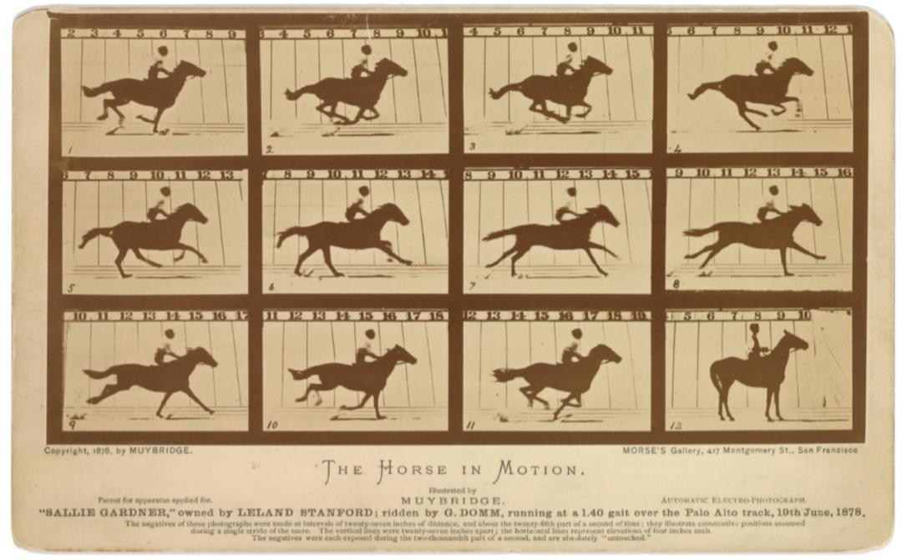

为什么我们需要使用更快的瞬态吸收光谱技术？
人作为一个被观察对象时，在一秒内可以走2-3步；人作为观察者时，反应速度约为0.1s 。当化学生物反应在一瞬间完成的时候，我们如何像观察人运动一样观察反应的发生成为了一个问题。这个问题无疑推动了瞬态吸收光谱技术的产生与发展。
马奔跑时几只蹄子落地？
有一个问题曾经让人们很困惑：马跑的时候，四蹄是不是都会离开地面？这个问题看似简单，却很难用肉眼观察。直到19世纪末，一个人用摄影的方式揭开了这个谜底。他就是埃德华·迈布里奇，一位著名的美国西部风光摄影师。
迈布里奇的故事和一匹马有关。这匹马的主人是加利福尼亚州的前州长，也是斯坦福大学的创始人，叫做Leland Stanford。他非常喜欢赛马，但他对马跑的时候是否四蹄离地感到好奇。他找到了迈布里奇，让他帮忙解决这个问题。迈布里奇想出了一个巧妙的办法：他在赛马道旁边安装了一排相机，每当马经过时，就触发快门拍照。通过这样的方法，他拍下了马跑的全过程，从而证明了马跑的时候确实有一刻四蹄都不着地。

这个发现不仅让斯坦福感到惊讶，也让世界震惊。因为迈布里奇的照片不仅展示了马跑的真实姿态，也展示了摄影的无限可能。迈布里奇后来还把这些照片制成了动画片，成为了电影的先驱。他的作品的影响不局限于电影与摄影。
在我们材料表征技术中，也有这样的天才般的创意。而我们的瞬态吸收光谱其实就是高速快门相机📷。
Its History
瞬态吸收技术是一种超快激光泵浦-探测技术，可以研究物质在光激发后的能级结构和弛豫过程。这种技术最早由George Porter和Ronald GW Norrish于1950年提出，他们利用二战中的高强度闪光灯管来诱导光活化反应。这些研究为他们赢得了1967年诺贝尔化学奖，特别是“由于他们通过非常短的能量脉冲干扰平衡而对极快的化学反应进行的研究”。
在他们之前，使用停流技术只能测量数百毫秒的反应动力学，而瞬态吸收技术可以达到微秒的时间分辨率。他们的开创性工作开启了一个新领域，使得快速的光化学反应可以被研究。自从瞬态吸收技术被发明以来，其时间分辨率一直在不断提高，到了1990年代，由于诺贝尔奖获得者Ahmed Zewail的推动，瞬态吸收技术达到了飞秒级。
- 泽维尔·米歇尔·弗朗索瓦·勒伊（Ahmed Zewail），飞秒激光器的先驱，利用飞秒激光泵浦/探测技术，探测到ICN的激发态能级跃迁，这个研究也成为化学反应过渡态理论的重要实验证据，泽维尔因此获得1999年度诺贝尔化学奖。
- 马丁·泽尔（Martin Zanni），二维红外瞬态吸收光谱（2D IR TAS）的创始人之一，该技术可以用来研究蛋白质等生物大分子的结构和动力学。
- 高桥敏夫（Toshinori Takahashi），飞秒瞬态吸收光谱（fs-TAS）在材料科学领域的领军人物之一，他利用fs-TAS技术研究了染料敏化太阳能电池、非线性光吸收、半导体材料的载流子迁移、单碳纳米管的自由载流子、有机光电材料等方面的光物理过程。
随着阿秒技术的出现，阿秒瞬态吸收也逐渐走进了表征测试工作者的视野之中。
Pump & Probe
飞秒瞬态吸收光谱仪最核心也是最天才的设计就是Delay Stage，它可以给一束光（也就是我们下面说的探测光）施加一个时间延迟。泵浦光能量较高，它可以激发样品使其达到激发态；探测光的功能则与它的名字一致，起到一个探测的作用。 在测试时泵浦光打在样品上，可以激发出各样的物理现象，测量出样品的透射率、反射率的变化。通过对探测光信号的捕捉观察就可以获取激发后衰减的动力学过程。
形象地讲就是我在接受监督（Pump光）的情况下写作业，想要窥得我的写作业情况就得监控（Probe光）。通过调节监控录像，也就是我们想说的时间延迟，就可以得知我在监督下写作随时间变化的动态过程。换到样品上则是可以获得物质分子被激发后随时间变化的动态过程，也就是衰减的动力学过程。